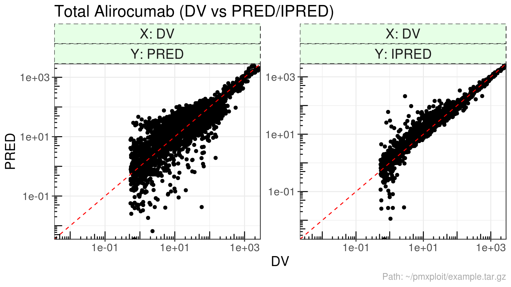
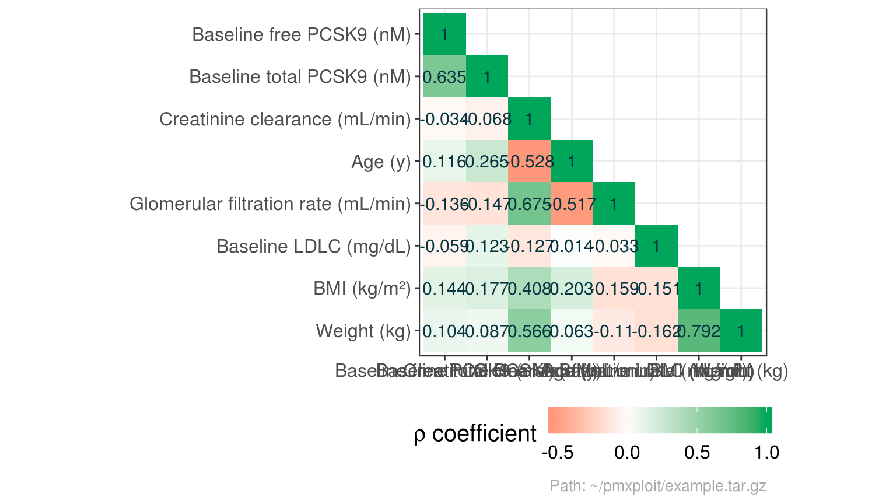

The present article describes briefly how to use pmxploit from R.
Load a NONMEM run archive
run <- load_nm_run(path = "path/to/my_run_archive.tar.gz")
Diagnostic plots
Dependent variable observations vs predictions

Residuals
plot_residuals(run, compartment = 2, residuals = "CWRES", idv = c("PRED", "TIME"), reference_value = 2)
plot_residuals(run, compartment = 2, residuals = c("CWRES"), type = "histogram")

Individual predictions profiles
Population parameters
THETA
last_estimation <- last(run$estimations)
last_estimation$thetas %>%
mutate(rse = scales::percent(rse)) %>%
kable()
| THETA1 |
TVCL |
0.1718969 |
0.0152002 |
8.84% |
0.1414965 |
0.2022974 |
| THETA2 |
TKON |
559.0000000 |
NA |
NA% |
NA |
NA |
| THETA3 |
TKIN |
0.1238032 |
0.0022245 |
1.80% |
0.1193541 |
0.1282523 |
| THETA4 |
TKDE |
1.3463553 |
0.0375067 |
2.79% |
1.2713418 |
1.4213687 |
| THETA5 |
TVQ |
0.5003945 |
0.0285826 |
5.71% |
0.4432292 |
0.5575597 |
| THETA6 |
TVV1 |
3.2259046 |
0.2038901 |
6.32% |
2.8181244 |
3.6336848 |
| THETA7 |
TVV2 |
2.6120000 |
NA |
NA% |
NA |
NA |
| THETA8 |
TVKA |
0.6377794 |
0.0467722 |
7.33% |
0.5442350 |
0.7313237 |
| THETA9 |
TVF |
0.5900018 |
0.0239372 |
4.06% |
0.5421275 |
0.6378761 |
| THETA10 |
TVEP |
0.2746841 |
0.0015050 |
0.55% |
0.2716741 |
0.2776941 |
| THETA11 |
TVEA |
0.5817956 |
0.0223812 |
3.85% |
0.5370331 |
0.6265581 |
| THETA12 |
TVLAG |
0.0298266 |
0.0010994 |
3.69% |
0.0276277 |
0.0320255 |
| THETA13 |
COV1 |
1.5642857 |
0.0850631 |
5.44% |
1.3941594 |
1.7344120 |
Convergence
plot_convergence(run, parameters = "theta")
#> Not shown fixed parameter(s): TKON, TVV2
OMEGA
# OMEGA matrix
kable(last_estimation$omega_matrix)
| ETCL |
0.279196 |
0 |
0.0000000 |
0.0000000 |
0.0000000 |
0.000000 |
0 |
0.0000000 |
0.0000000 |
| EKON |
0.000000 |
0 |
0.0000000 |
0.0000000 |
0.0000000 |
0.000000 |
0 |
0.0000000 |
0.0000000 |
| EKIN |
0.000000 |
0 |
0.0580908 |
0.0000000 |
0.0000000 |
0.000000 |
0 |
0.0000000 |
0.0000000 |
| EKDE |
0.000000 |
0 |
0.0000000 |
0.1705345 |
0.0000000 |
0.000000 |
0 |
0.0000000 |
0.0000000 |
| ETQ |
0.000000 |
0 |
0.0000000 |
0.0000000 |
0.0691066 |
0.000000 |
0 |
0.0000000 |
0.0000000 |
| ETV1 |
0.000000 |
0 |
0.0000000 |
0.0000000 |
0.0000000 |
0.099037 |
0 |
0.0000000 |
0.0000000 |
| ETV2 |
0.000000 |
0 |
0.0000000 |
0.0000000 |
0.0000000 |
0.000000 |
0 |
0.0000000 |
0.0000000 |
| ETKA |
0.000000 |
0 |
0.0000000 |
0.0000000 |
0.0000000 |
0.000000 |
0 |
0.4644621 |
0.0000000 |
| ETF |
0.000000 |
0 |
0.0000000 |
0.0000000 |
0.0000000 |
0.000000 |
0 |
0.0000000 |
0.2895511 |
# OMEGA matrix as a table, with RSE% and IC 95%
last_estimation$omega %>%
mutate(rse = scales::percent(rse)) %>%
kable()
| ETCL |
ETCL |
0.2791960 |
0.0761155 |
27.3% |
0.1300096 |
0.4283823 |
0.5675090 |
| EKIN |
EKIN |
0.0580908 |
0.0046239 |
8.0% |
0.0490280 |
0.0671536 |
0.2445633 |
| EKDE |
EKDE |
0.1705345 |
0.0164141 |
9.6% |
0.1383628 |
0.2027062 |
0.4312059 |
| ETQ |
ETQ |
0.0691066 |
0.0297647 |
43.1% |
0.0107678 |
0.1274454 |
0.2674891 |
| ETV1 |
ETV1 |
0.0990370 |
0.0165851 |
16.7% |
0.0665301 |
0.1315438 |
0.3226563 |
| ETKA |
ETKA |
0.4644621 |
0.0494723 |
10.7% |
0.3674963 |
0.5614279 |
0.7688681 |
| ETF |
ETF |
0.2895511 |
0.0717353 |
24.8% |
0.1489500 |
0.4301522 |
0.5795064 |
Shrinkage
last_estimation$shrinkage %>%
mutate(shrinkage = scales::percent(shrinkage)) %>%
kable()
Individuals
Parameters
Distributions
summarize_parameters_distributions(run)
#> # A tibble: 11 x 12
#> parameter n n_distinct mean median sd `5.0%` `25.0%`
#> <fct> <int> <int> <dbl> <dbl> <dbl> <dbl> <dbl>
#> 1 CL 527 493 1.68e-1 1.72e-1 3.05e-2 1.15e-1 1.58e-1
#> 2 KON 527 1 5.59e+2 5.59e+2 0. 5.59e+2 5.59e+2
#> 3 KSS 527 33 5.80e-1 5.80e-1 4.68e-5 5.80e-1 5.80e-1
#> 4 KINT 527 507 1.29e-1 1.25e-1 2.62e-2 9.35e-2 1.13e-1
#> 5 KDEG 527 520 1.38e+0 1.37e+0 4.46e-1 7.78e-1 1.09e+0
#> 6 Q 527 500 5.03e-1 5.00e-1 3.30e-2 4.65e-1 4.92e-1
#> 7 V1 527 523 4.59e+0 4.61e+0 1.30e+0 2.71e+0 3.54e+0
#> 8 V2 527 1 2.61e+0 2.61e+0 0. 2.61e+0 2.61e+0
#> 9 KA 527 496 6.53e-1 6.38e-1 2.52e-1 3.54e-1 5.62e-1
#> 10 ALAG1 527 1 2.98e-2 2.98e-2 0. 2.98e-2 2.98e-2
#> 11 F1 527 494 6.08e-1 5.95e-1 1.20e-1 4.62e-1 5.42e-1
#> # … with 4 more variables: `75.0%` <dbl>, `95.0%` <dbl>, min <dbl>,
#> # max <dbl>
plot_parameters_distributions(run, parameters = "eta")
#> Warning: Computation failed in `stat_bin()`:
#> `binwidth` must be positive
#> Warning: Computation failed in `stat_bin()`:
#> `binwidth` must be positive
Correlations
summarize_parameters_correlations(run, parameters = "individual")
#> Correlations are not computed for parameters(s) with one unique value: KON, V2, ALAG1
#> V1 F1 Q KSS KINT KA
#> V1 1.00000000 -0.58741001 -0.05479555 0.1106159 0.1098006 0.30323370
#> F1 -0.58741001 1.00000000 0.13141825 0.2147780 0.2165945 -0.06226802
#> Q -0.05479555 0.13141825 1.00000000 0.3817025 0.3792538 0.05201759
#> KSS 0.11061590 0.21477798 0.38170253 1.0000000 0.9981868 0.19737220
#> KINT 0.10980058 0.21659448 0.37925379 0.9981868 1.0000000 0.19826681
#> KA 0.30323370 -0.06226802 0.05201759 0.1973722 0.1982668 1.00000000
#> CL 0.30095621 0.02300692 0.09799981 0.3480292 0.3480398 0.22345707
#> KDEG 0.16623895 -0.04360299 0.09469923 0.2157855 0.2162849 0.17495309
#> CL KDEG
#> V1 0.30095621 0.16623895
#> F1 0.02300692 -0.04360299
#> Q 0.09799981 0.09469923
#> KSS 0.34802922 0.21578546
#> KINT 0.34803981 0.21628493
#> KA 0.22345707 0.17495309
#> CL 1.00000000 0.33390241
#> KDEG 0.33390241 1.00000000
plot_parameters_correlations(run, parameters = "eta", type = "heatmap")
#> Correlations are not computed for parameters(s) with one unique value: EKON, ETV2
Continuous covariates
Distributions
summarize_continuous_covariates(run)
#> # A tibble: 8 x 12
#> covariate n n_distinct mean median sd `5.0%` `25.0%` `75.0%`
#> <fct> <int> <int> <dbl> <dbl> <dbl> <dbl> <dbl> <dbl>
#> 1 Age (y) 527 58 52.5 56 13.0 24 46 62
#> 2 BMI (kg/… 527 438 28.0 27.4 4.60 21.5 24.7 30.7
#> 3 Baseline… 527 320 140. 134. 33.0 101 117. 157.
#> 4 Creatini… 527 517 109. 104. 30.4 67.6 87.3 128.
#> 5 Baseline… 527 291 2.55 2.39 1.07 1.22 1.81 3.08
#> 6 Glomerul… 527 480 94.1 90.8 21.1 66.6 79.6 105.
#> 7 Baseline… 527 437 7.66 6.99 3.06 3.73 5.61 9.14
#> 8 Weight (… 527 345 80.6 79.2 16.4 57.3 69.0 89.4
#> # … with 3 more variables: `95.0%` <dbl>, min <dbl>, max <dbl>
plot_continuous_covariates_distributions(run)
Correlations
summarize_covariates_correlations(run)
#> Baseline free PCSK9 (nM)
#> Baseline free PCSK9 (nM) 1.00000000
#> Baseline total PCSK9 (nM) 0.63474111
#> Creatinine clearance (mL/min) -0.03390245
#> Age (y) 0.11602376
#> Glomerular filtration rate (mL/min) -0.13572416
#> Baseline LDLC (mg/dL) -0.05890704
#> BMI (kg/m²) 0.14352343
#> Weight (kg) 0.10401265
#> Baseline total PCSK9 (nM)
#> Baseline free PCSK9 (nM) 0.63474111
#> Baseline total PCSK9 (nM) 1.00000000
#> Creatinine clearance (mL/min) -0.06800086
#> Age (y) 0.26465204
#> Glomerular filtration rate (mL/min) -0.14715975
#> Baseline LDLC (mg/dL) 0.12308252
#> BMI (kg/m²) 0.17724420
#> Weight (kg) 0.08670552
#> Creatinine clearance (mL/min)
#> Baseline free PCSK9 (nM) -0.03390245
#> Baseline total PCSK9 (nM) -0.06800086
#> Creatinine clearance (mL/min) 1.00000000
#> Age (y) -0.52845720
#> Glomerular filtration rate (mL/min) 0.67538184
#> Baseline LDLC (mg/dL) -0.12739227
#> BMI (kg/m²) 0.40805133
#> Weight (kg) 0.56597426
#> Age (y)
#> Baseline free PCSK9 (nM) 0.11602376
#> Baseline total PCSK9 (nM) 0.26465204
#> Creatinine clearance (mL/min) -0.52845720
#> Age (y) 1.00000000
#> Glomerular filtration rate (mL/min) -0.51708487
#> Baseline LDLC (mg/dL) 0.01378944
#> BMI (kg/m²) 0.20298742
#> Weight (kg) 0.06328087
#> Glomerular filtration rate (mL/min)
#> Baseline free PCSK9 (nM) -0.13572416
#> Baseline total PCSK9 (nM) -0.14715975
#> Creatinine clearance (mL/min) 0.67538184
#> Age (y) -0.51708487
#> Glomerular filtration rate (mL/min) 1.00000000
#> Baseline LDLC (mg/dL) -0.03312037
#> BMI (kg/m²) -0.15911903
#> Weight (kg) -0.10956357
#> Baseline LDLC (mg/dL) BMI (kg/m²)
#> Baseline free PCSK9 (nM) -0.05890704 0.1435234
#> Baseline total PCSK9 (nM) 0.12308252 0.1772442
#> Creatinine clearance (mL/min) -0.12739227 0.4080513
#> Age (y) 0.01378944 0.2029874
#> Glomerular filtration rate (mL/min) -0.03312037 -0.1591190
#> Baseline LDLC (mg/dL) 1.00000000 -0.1510291
#> BMI (kg/m²) -0.15102914 1.0000000
#> Weight (kg) -0.16168067 0.7920918
#> Weight (kg)
#> Baseline free PCSK9 (nM) 0.10401265
#> Baseline total PCSK9 (nM) 0.08670552
#> Creatinine clearance (mL/min) 0.56597426
#> Age (y) 0.06328087
#> Glomerular filtration rate (mL/min) -0.10956357
#> Baseline LDLC (mg/dL) -0.16168067
#> BMI (kg/m²) 0.79209179
#> Weight (kg) 1.00000000
plot_covariates_correlations(run, type = "heatmap")

run %>%
group_by(STUD) %>%
plot_covariates_correlations(type = "scatterplot")
#> Warning in GGally::ggscatmat(as.data.frame(select(df, -ID))): Factor
#> variables are omitted in plot
Quality criteria
qc_stud %>%
select(Study, standard) %>%
unnest() %>%
kable()
| 0 |
786.5671 |
1.402490 |
| 1 |
120.9971 |
1.487727 |
| 2 |
171.3205 |
1.516194 |
| 3 |
113.7925 |
1.569381 |
| 4 |
460.8415 |
1.550188 |
| 5 |
190.3589 |
1.605442 |
| 6 |
117.1923 |
1.637036 |
| 7 |
228.3282 |
1.624440 |
| 8 |
146.0201 |
1.847918 |
# Bias
qc_stud %>%
select(Study, bias) %>%
unnest() %>%
mutate(relative_value = scales::percent(relative_value)) %>%
rename(`Mean Prediction Error (%)` = relative_value) %>%
kable()
| 0 |
-14.2811313 |
-22.301736 |
-6.260527 |
-5.8% |
| 1 |
0.4946943 |
-1.185524 |
2.174913 |
1.8% |
| 2 |
-4.1641145 |
-4.904954 |
-3.423276 |
-18.4% |
| 3 |
8.4579500 |
6.735203 |
10.180697 |
25.3% |
| 4 |
-10.8373662 |
-12.183189 |
-9.491543 |
-22.2% |
| 5 |
1.9028940 |
1.002670 |
2.803118 |
5.9% |
| 6 |
-0.3312528 |
-2.009636 |
1.347131 |
-0.9% |
| 7 |
-9.5851697 |
-11.691082 |
-7.479257 |
-20.6% |
| 8 |
-13.3829373 |
-15.581440 |
-11.184434 |
-31.6% |
# Precision
qc_stud %>%
select(Study, precision) %>%
unnest() %>%
mutate(relative_value = scales::percent(relative_value)) %>%
rename(`Root Mean Square Error (%)` = relative_value) %>%
kable()
| 0 |
119.60062 |
101.32976 |
135.42856 |
48.9% |
| 1 |
19.36620 |
16.31571 |
21.99766 |
71.3% |
| 2 |
16.07381 |
14.11605 |
17.81773 |
71.2% |
| 3 |
22.88012 |
20.21317 |
25.26712 |
68.4% |
| 4 |
30.11989 |
24.73595 |
34.67777 |
61.7% |
| 5 |
20.95346 |
19.33192 |
22.45822 |
65.5% |
| 6 |
21.78440 |
19.38433 |
23.94509 |
56.7% |
| 7 |
33.23176 |
28.39221 |
37.45106 |
71.5% |
| 8 |
28.31826 |
24.68632 |
31.53464 |
66.8% |